选对瞬间，而不是堆特效：158 条短视频告诉我们什么在驱动播放
AutoClip 研究笔记 #1 · 2026 年 10 月 9 日 · English
一句话结论。 我们记录了 158 条公开短视频，覆盖六类内容：访谈/播客、新闻、纪录片、综艺/影视、游戏/直播、vlog/杂志。然后只在同一个账号内部比较高播和低播。各类内容里一致成立的是：片子里是谁、讲什么，以及从哪一秒开始，比怎么剪更能预测播放。GQ 用同一套模板，一条 2,823,259 播放，一条 6,261；HasanAbi 同模板 4 条，差 8–12 倍。切镜率、推近、花字、贴纸、音效、调色、模板，高播和低播都在用。所以 AutoClip 会把力气放在选片和入点/金句识别上，包装只当作质量底线加品牌审美，不当作增长杠杆。下面的数据都是 2026-10-09（UTC+8）抓取时的公开快照；我们自己的账号还没有数据，文末列出了准备做的 A/B 测试。
1. 为什么做这件事
AutoClip 是一个开源工具，把长视频（访谈、播客、演讲）剪成短切片（github.com/zhouxiaoka/autoclip）。所有切片工具（包括我们自己）都很容易在"特效"上内卷：自动推近、动态字幕、表情贴纸、音效、模板。这些东西好演示，也好截图。
再花一个季度做模板之前，我们想先弄清楚：哪些手法真的影响播放，哪些只是手艺，也就是成熟账号不管爆不爆都会做的事。这篇笔记写的是我们的发现、方法、改了什么，以及还不知道什么。
写给谁：决定剪辑时间花在哪里的创作者和切片号运营，以及做切片工具的开发者。
2. 数据与方法
2.1 样本
| 类别 | 平台 | 记录条数 | 数据抓取时间（2026-10-09，UTC+8） |
|---|---|---|---|
| 访谈/播客切片，含设计向账号（WIRED、Vogue、a16z、Colin and Samir、Sixth Tone、歸藏） | X | 57（另有 5 条只记了要点） | 约 03:30、04:18、05:05、06:30、07:16–07:19 |
| 新闻短片 + 纪录片/科普解说 | X | 主表 22 条（另有 Veritasium、AJ+ 对照用的同号帖子） | 05:18–05:35 |
| 综艺 + 影视片段（中 / 韩 / 日） | YouTube Shorts、X | 26（其中 3 条只有元数据） | YouTube 06:25–06:28；X 05:50–05:53 |
| 游戏切片 + 直播 facecam 切片 | YouTube Shorts | 25（另有 7 条下载作废，见第 8 节） | 07:06–07:21 |
| vlog + 杂志 / editorial | YouTube Shorts（2 条长视频只看前 90s） | 28 | 07:33–07:47 |
| 合计 | 158 |
所有指标都是抓取时刻的快照，之后还会变。访谈/播客数据来自 X 的只读接口；视频文件是公开 MP4（video.twimg.com），或用 yt-dlp 读 YouTube 公开页。不用 cookie、代理、登录或付费爬虫。平台拦截时我们就停下记录，不绕过（第 8 节）。
2.2 证据卫生：怎么避免自己骗自己
账号权重压倒一切。我们找到的最干净的一组对照里，同一个视频、同一段文案，一个账号发是 141,835 曝光，另一个账号发是 386，差约 367 倍。所以跨账号比较包装没有意义。我们定了这几条规则：
- 1. 只在同一账号内比较。 包装效果只从同号对照里下结论，最好是同模板、同日或相邻日。
- 2. 帖龄 ≥12 小时。 更新的帖子播放还在涨。发布才 1–5 小时的标为弱对照，不进结论。
- 3. 点赞率过滤。 X 上赞/曝光 <0.05% 的视为异常（疑似投放或推荐异常）。60 Minutes 有一条 279,085 曝光只有 29 个赞，已剔除。YouTube 上点赞率低于同号其他条一半、或画面带赞助横幅的，标 ⚠，只学技法。MBC 的高播条（点赞率 0.10–0.20%，同号低播 0.21–0.45%）、NOWNESS、Hypebeast 都因此排除。
- 4. 指标口径。 X 的
view_count在视频被复用时会合并计数；X 的曝光和播放不能互比，同一组比较里从不混用。 - 5. 做法 ≠ 效果。 "高播条都在做 X"只记为做法；只有同号高低播之间有差别，才称为效果。
- 6. 哪些测量可信，哪些不可信。 时长、切点用 ffprobe / ffmpeg 场景检测（X 视频阈值 0.30；综艺在画面内容区用 0.22），同机位跳切会少计。响度用
ebur128，停顿用silencedetect（−45 dB、0.25s）。推近倍数只引用逐帧核实过的（自动估计噪声太大）。有没有 BGM 是从停顿数推断的，没有实听。
证据强度（全文通用）：
- 高：≥3 个独立账号一致。
- 中：同号对照，或 2 个账号。
- 低：单个样本，或推断。
2.3 本文用到的术语
- 缩略图总览：把一条视频按固定间隔截成小图、排成网格，一眼看完整条片子。
- 曝光 / 播放：X 上"曝光"是帖子被刷到的次数，"播放"是视频被播放的次数，两者不可直接比较。YouTube 只用播放数。
- 赞率：点赞数 ÷ 曝光（或播放）。
- 入点：切片从原视频的哪一秒开始。
- 切镜率：每分钟有多少次画面切换。
- 推近 / 拉远（punch-in / pull-out）：把画面放大（如 1.27×）或缩回全景，制造"换机位"的效果。
- B-roll：插在讲话中间的辅助画面（实物、场景），声音不断。
- 花字：综艺里带描边、贴纸、动画的风格化字幕。
- LUFS / dBTP：响度和峰值的单位。平台通常把响度拉到约 −14 LUFS；峰值 ≤ −1 dBTP 可避免爆音。
- 黑位 p1：画面最暗的 1% 像素的亮度（0–255）；数值高说明黑色发灰、"褪色"。
- J-cut：下一个画面的声音先进来，画面后切。
- 三明治版式：上标题条 + 中间 16:9 画面 + 下品牌条的竖屏版式。
3. 发现：什么在预测播放
发现 1：同一个模板，结果天差地别（证据：高）
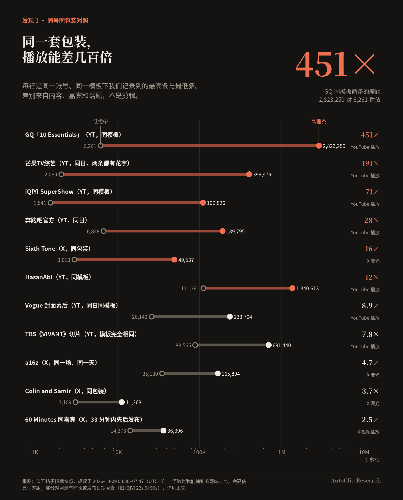
- GQ「10 Essentials」（背景、桌子、字幕、产品插入完全一样）：2,823,259 和 1,306,890 播放，对比 6,261–8,562，差 330–450 倍。差别在嘉宾知名度和话题。
- HasanAbi 同一模板：1,340,613 / 1,293,987 对 111,361 / 175,004，约 8–12 倍。差别在话题和选段。
- Vogue 封面幕后，同日同模板：233,704 对 26,142（8.9 倍），封面人物不同。
- TBS 日剧《VIVANT》切片，模板完全相同：691,440 对 88,565（7.8 倍）。一条是暗场独白和对峙，一条是温情家庭戏。这是我们找到的最干净的一组"包装不变，内容决定"。
- YouTube 上的中国综艺官方号，同号同日的差距是 28–600 倍。
- X 上也一样，同包装对照有 a16z 4.7 倍（同一场、同一天）、Sixth Tone 16 倍、Colin and Samir 3.7 倍（曝光）。这几组，加上 WIRED 那一组，都是钩子更具体的那条更高（见发现 3）。
同一个模板既能出 280 万播放，也能出 6 千播放，那决定结果的就不是模板。
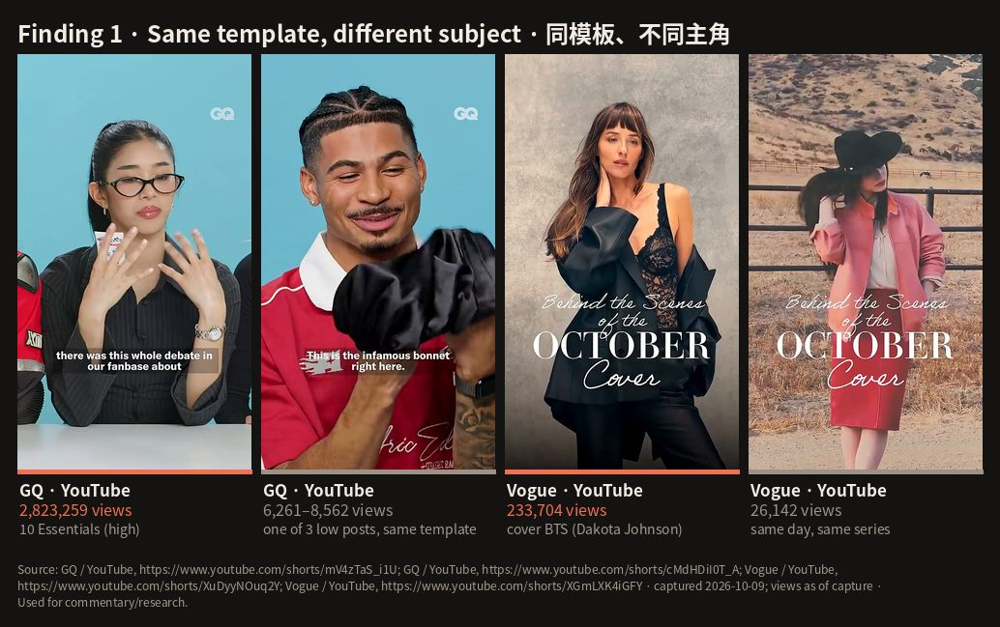
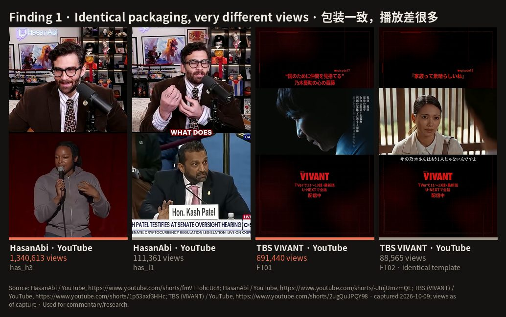
发现 2：入点。前约 1.5 秒要有人脸或"看得见的事件"（证据：中）
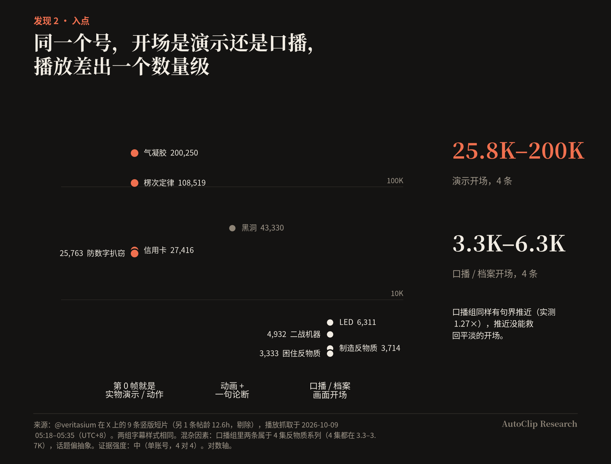
- Veritasium（同号，字幕样式完全一样）：第 0 帧就是实物演示或动作的，播放 25.8K–200K；口播或档案画面开场的，3.3K–6.3K。口播组也有句界推近（逐帧实测 1.27×），推近救不了平淡的开场。混杂因素：口播组里有两条属于一个 4 集的反物质系列，话题偏抽象。
- 综艺/影视（第 2 批）：逐帧核查过开头的样本里，高播 8 条中有 7 条在 1.6s 内出现有表情的人脸，低播 6 条中只有 2 条。
- 主播切片（第 3 批）：4 组版式不同的同号对照，人脸为主的都赢过屏幕素材为主的：Ludwig 4.7 倍（同日）、Valkyrae 6.9 倍、CaseOh 7.6 倍（版式相同，素材从游戏换成人）、summit1g 11 倍。话题也不同；而且有一条 8 秒纯游戏画面的切片照样 187 万播放。
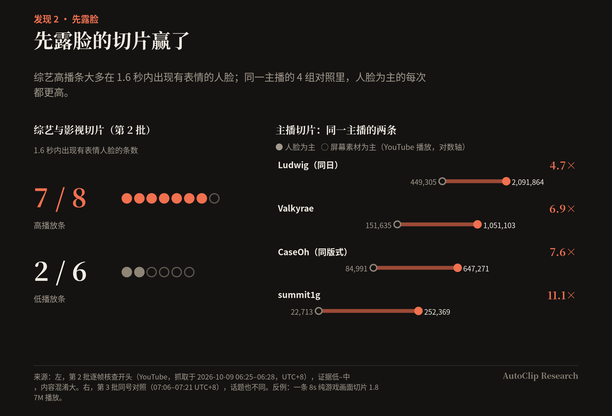
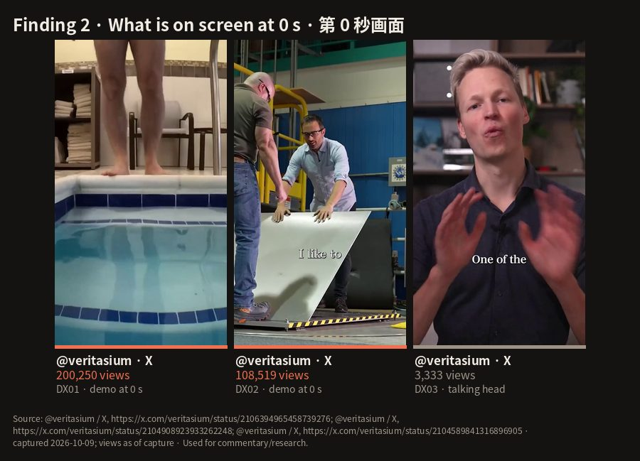
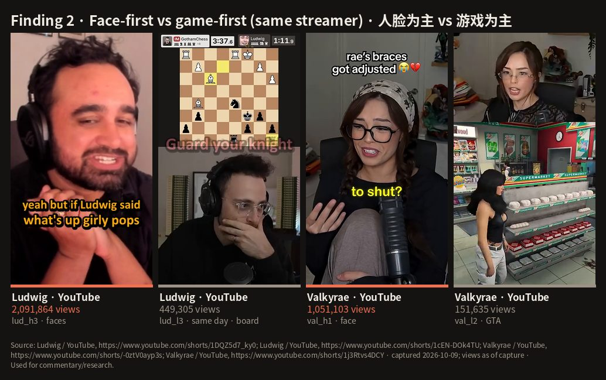
前 1.5 秒基本是在选入点时决定的，不是在剪辑里。素材里没有的反应，剪辑师加不出来。
发现 3：具体的标题写"人名 + 具体行为 / 数字"（证据：低–中，方向一致）
- iQIYI SuperShow 同模板：写出人和他做了什么的标题（「话痨#布瑞吉 虚心接受 但不一定改~」）109,826 播放；抽象口号（「锋芒留给舞台 尊重留给对手」）1,541 / 1,735。这一组混有时长因素（22s 对 96s）。
- 奔跑吧 同日同模板：「宋雨琦这几句给我钓成翘嘴」（具体人名 + 网络梗）189,795；没有主体的感叹「人怎么能闯这么大的祸」6,848。
- 60 Minutes 同嘉宾、同包装，三条在 33 分钟内先后发布：讲"列举框架"（三种工作）的那条 36,396 播放 / 165 收藏，另两条 21,900 / 69 和 14,373 / 52。那条的文案以问句"What does AI mean for your job?"开头。
- WIRED 同模板：俏皮的主张句比悬念问句的赞率高 4 倍。Colin and Samir：可执行的反常识主张（"内容日历其实不好"）曝光是空泛格言的 3.7 倍。
- 数字是包袱的时候有用：有吉の壁报年龄那条（「40歳」）3,407,645 播放；12 条低播综艺的标题里只有 1 条含数字。这一组有帖龄混淆，证据弱。
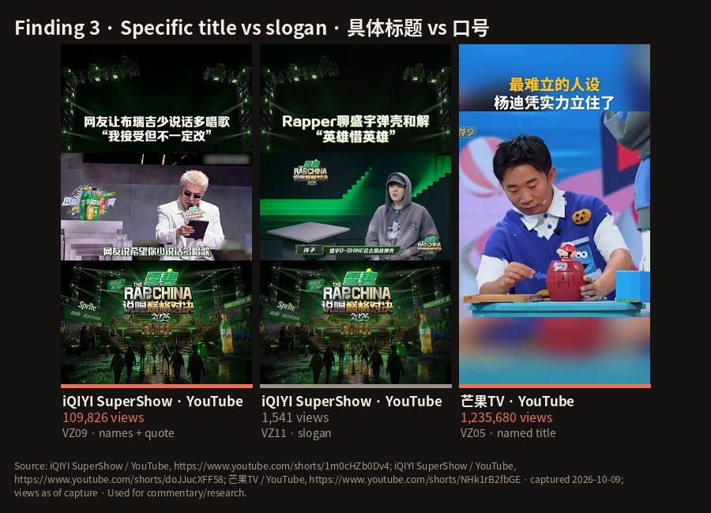
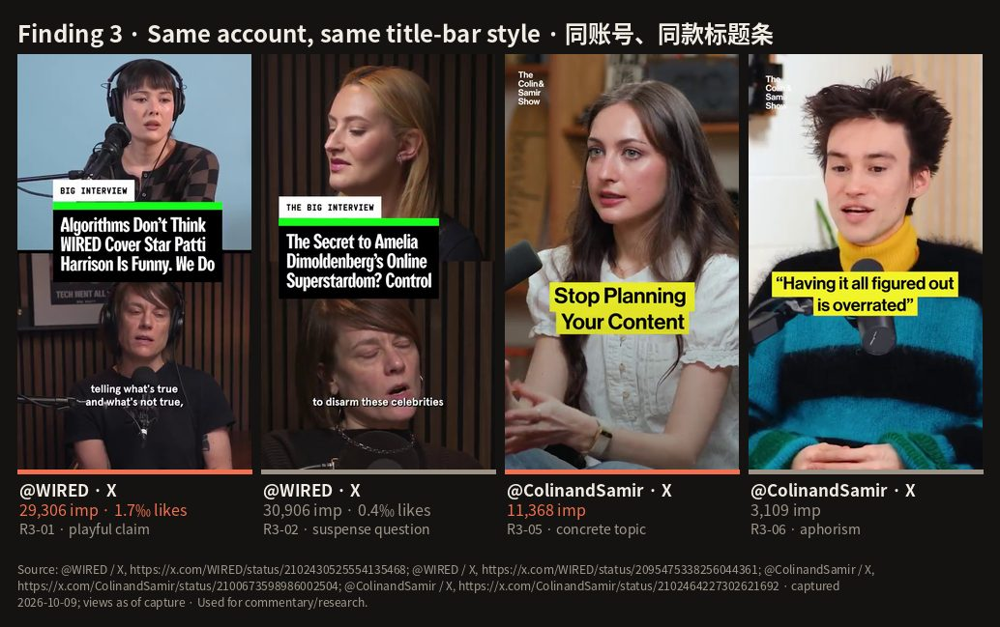
一个没预料到的诊断信号：低播条的点赞率往往更高（奔跑吧低播 3.5–3.9% 对高播 1.2–1.5%；iQIYI 低播 1.8% 对高播 0.7%）。我们的理解是：这些片子只触达了粉丝，没破圈到路人。依赖粉丝语境的标题，出不了粉丝圈。
在 X 上，帖子文案就是一半的包装。20VC 那条文案首句是一个可争论的论断："Every seed investment is an option bet."，拿到 283,526 曝光、66 次引用；同号用长引语、没有论断的两条只有 1.5–1.7 万曝光。
发现 4：能独立成立的一句话，胜过需要上下文的（证据：低–中）
高播条里通常有一句不需要铺垫就成立的话：一个数字、一个反差，或一句话的回答。Dazed 问 Rick Owens"What do you look for in your models?"，他答"I just choose weirdos."（255,579 播放；17s 的街头问答，几乎不剪）。Veritasium 最差的开头是"One of the first experiments that was done…"，要有前情才看得懂。这是选片层的信号，剪辑里加不出来。
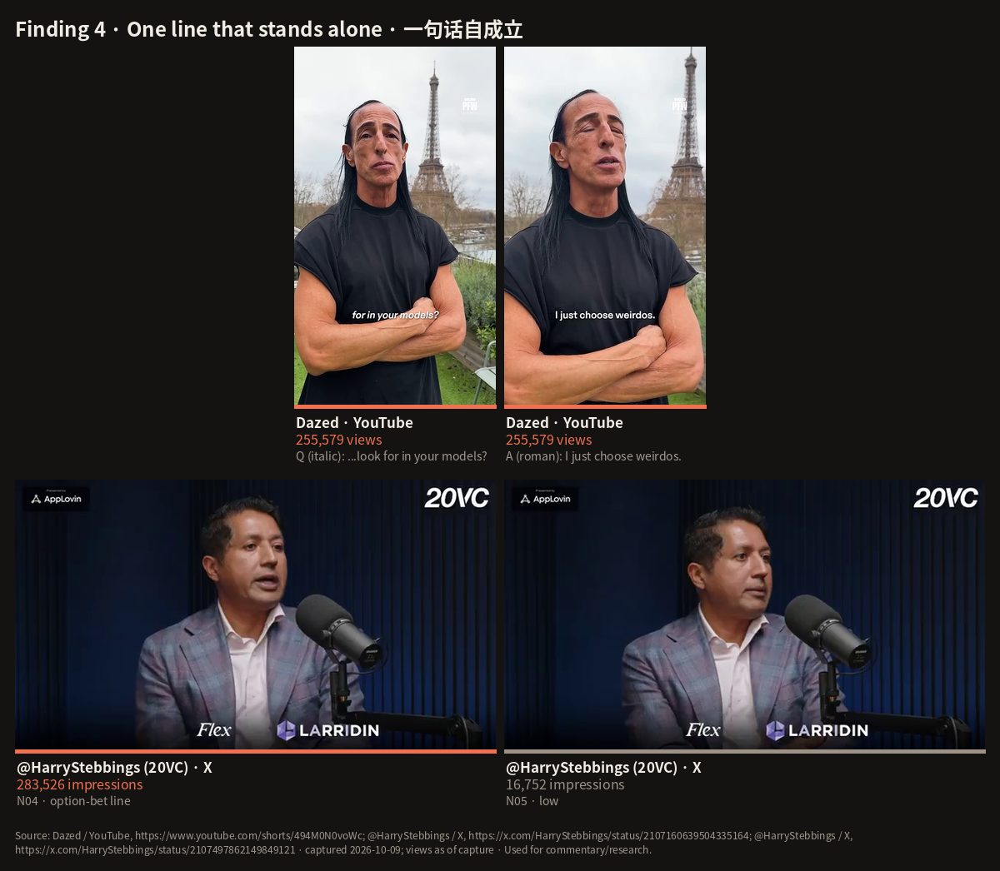
发现 5：默认越短越好，但有一个明确的例外（证据：中）
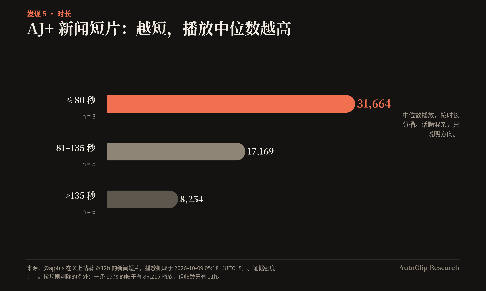
- AJ+：≤80s 中位数 31,664（n=3）；81–135s 17,169（n=5）；>135s 8,254（n=6）。话题混杂。
- iQIYI：22s / 27s 两条是 109,826 / 29,245；95–96s 两条是 1,541 / 1,735。
- X 上的访谈号，两组同号对照里低播条都超过 200s（TBPN 224s 对 85s；WOLF 247s 对 90s）。
- 例外：HasanAbi 同模板的 78s 和 180s 两条都是约 130 万；CaseOh 133–136s 的片子是 41–65 万。素材是连续争论或连续大笑时，60–180s 也行。对已经有固定受众的 X 策展号，整期双语字幕长片也可能成立（一条 27 分钟的中英字幕版 77,329 曝光，约是该号短切片的 10 倍）。我们的默认值仍是 ≤90s。
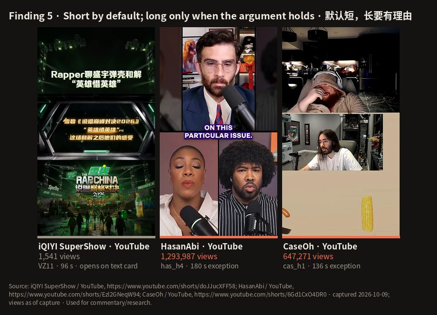
发现 6：包装手法是手艺，高播低播都在用（"没有一致效果"这一点，证据：高）
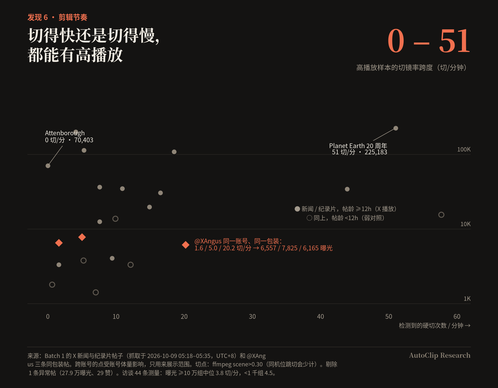
| 手法 | 我们看到的 |
|---|---|
| 切镜率 | 高表现样本从 0 切/分（Attenborough，70,403）到 51 切/分（Planet Earth 20 周年，225,183）都有。访谈 44 条测量里，曝光 ≥10 万组中位 3.8 切/分，<1 千组 4.5 切/分。同一账号同一包装：1.6、5.0、20.2 切/分 → 6,557、7,825、6,165 曝光。Dazed 的高播街采只有 0–4 个切点。 |
| 推近 / 缩放 | 几乎人人都用（60 Minutes 1.30×、Veritasium 1.27×、WSJ 1.45×，逐帧核实），但 Veritasium 的低播条也有。 |
| 花字、贴纸 | 芒果 2,089 播放那条和同日 399,479 播放那条一样有花字。 |
| 音效密度 | 瞬态密度这个代理指标在不同对照里方向相反（HasanAbi 高播 89.6/分 对 低播 128.5；Jynxzi 高播 112 对 低播 40）。 |
| 响度 | 主播切片从 −8.4 到 −31.2 LUFS 都有。高播条更响的有 4 组，更轻的有 3 组。不过两个极端都是失误（见第 5 节的底线）。 |
| 调色 | Vogue 唯一一组同日对照：深黑（p1=1.6）233,704 对 抬黑褪色（p1=49.6）26,142。封面人物不同，只算观察。 |
| 模板 / 版式 | 见发现 1。"三明治"版式（标题条 + 16:9 + 品牌条）340 万播放的片子在用，低播的也在用。 |
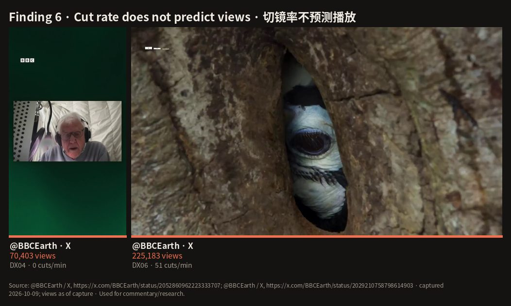
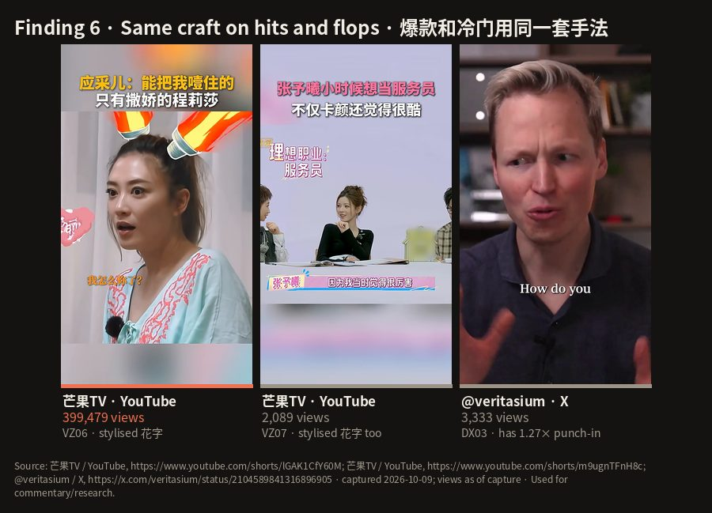
包装真正决定的是什么：一个号看起来是否有品位、有一致的识别度，可能还影响点赞和收藏。有固定排版系统的设计向账号收藏率很高（歸藏「AI 早报」每千曝光 5.4 次收藏；Colin and Samir 的概念动画图 9.5 次）。我们重视这一点，但它不是传播量的来源。
4. 这对 AutoClip 意味着什么
核心判断：对切片工具来说，杠杆最大的决定发生在剪辑之前：选哪个视频、哪个瞬间、第一秒是什么、标题怎么写。包装应该是一条可靠的底线，永远不让创作者丢人，再加上几套有品位的外观。我们不在包装上竞争。
具体在做的事（截至本文）：
| 方向 | 做什么 | 状态 |
|---|---|---|
| 选片 | "选片雷达" v1：给候选长视频按 7 个维度打分，门禁拦掉 Shorts、短于 8 分钟、超过 30 天、疑似搬运和没人看的视频（图 6） | v1 已做；2026-10-09 03:36 首次实跑：354 条候选 → 立即剪 1 条、继续看 26 条、过滤 327 条（其中 128 条是 Shorts）。权重是经验值，尚未用我们自己的发帖数据校准 |
| 入点 | 在候选起点 ±3s 内找视觉或情绪峰值（手势、笑、道具、反应）作为入点，让人脸或事件在约 1.2–1.5s 内出现；结尾停在反应上 | 规则已采纳。我们的模板第 0 帧已经是满屏人脸；自动选峰值入点还没做 |
| 金句 / 能独立成立的一句话 | 雷达的"钩子密度"按每千词统计数字、断言词、故事信号；列举/框架句加分 | 密度打分已写好；服务器 IP 拉不到字幕时退回用标题和简介。列举加分是提案 |
| 标题与文案 | 两行标题：设定行 +「谁 + 具体行为/数字」；文案首句 = 片中最可争论的原话；每个论断都要能在讲者原话里找到依据 | 已在包装原型里实现，并强制人工通读。只出草稿，不自动发帖 |
| 包装 | 当作底线：响度、叠层避脸、音画同步、1080p 清晰源、片尾短或不要；再加几套差异明显的外观，避免同号审美疲劳 | 已做成交付前的自动检查 |
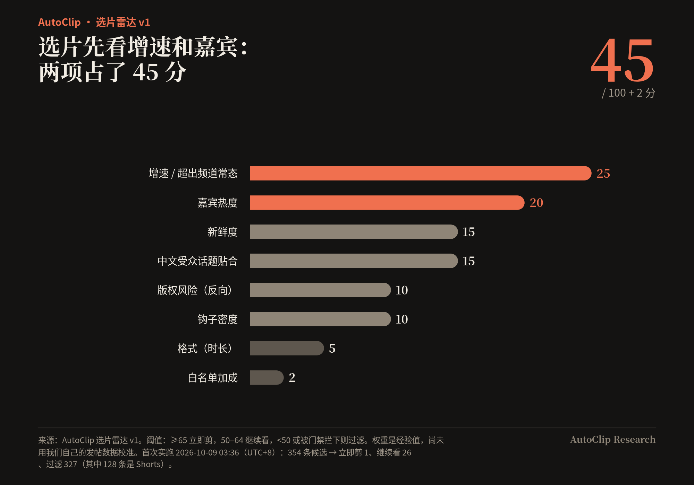
5. 我们保留的包装手法 Top 10（附参数）
按预期影响排序，排在前面的大多是选片和文案。第 1–4 条和第 7 条的参数，是根据核查帧推断的实现建议，不是从原片测出来的值。
| # | 手法 | 参数 | 证据 |
|---|---|---|---|
| 1 | 入点选在峰值 | 0–1.5s 内出现有表情的人脸，或金句的第一个词；可以先放金句，再回到上下文。结尾停在反应上 1.0–2.5s | 中（Veritasium 4 对 4；综艺 7/8 对 2/6） |
| 2 | 具体标题条 | 第 1 行：设定或原话，≤10 字，0.75× 字号，强调色。第 2 行：人名 + 具体行为、反差或数字，≤14 字，字重 800–900。杂志模板改用衬线标题 | 低–中 |
| 3 | 问题卡开头 | 主持人的原问题，或真实评论，0–2.3s，斜体；嘉宾回答用正体。禁止编造 | 低 |
| 4 | 数字揭晓 + 滚动 | 只用原话里的数字。模糊入场 0.2s → 滚动 0.5–0.7s（easeOutExpo + 运动模糊）→ 2.0–2.4× 衬线数字，常驻 2.5–3.5s | 低–中 |
| 5 | 阶梯推近 + 反应拉远 | 句界瞬切 1.00 ↔ 1.22–1.28；强调词 ≤1.45×，每条 ≤3 次。身体反应时拉回 1.0×，停 ≥1.5s | 做法高 / 效果未验证（卫生项） |
| 6 | 强调词字形对比 | 杂志模板：每句 1 个衬线斜体词，1.15–1.3×，强调色，每 3s ≤1 处。娱乐模板：放大 1.7–2.0× | 做法（3 个账号） |
| 7 | 多人对话字幕 | 每人一种固定颜色；被打断的那句灰显，透明度 45–55%。交锋段每次换人就切，镜头 0.4–1.5s | 低–中（单号同日一组） |
| 8 | 物件 B-roll 压对白 | 1.5–3.0s，词边界进出，原声不断；每 20s ≤2 段；不能长时间压过人脸 | 卫生项 |
| 9 | 列举节拍卡 | 每项 ≤6 字，细体或宽字距大写 + 大号细数字，每项配一次推近；最后放 1.2s 汇总卡 | 作为选片信号是中（60 Minutes）；画面上的节拍卡是外推 |
| 10 | 技术底线 | −14 LUFS ±1，true peak ≤ −1 dBTP；停顿处不出现数字静音（p10 ≥ −45 dBFS）；一个模板一个 LUT，黑位 p1 ≤ 10/255；不用 ≥2s 的品牌尾卡 | 技术规范 |
第 10 条这条底线有两个理由：主播切片从 −8.4 到 −31.2 LUFS 都有，和播放没有关系（平台本来就会做响度归一）；Peter McKinnon 的播客切片 −29.5 / −28.6 LUFS、停顿处是真静音，是他账号里最弱的形式（25,422 / 32,694，对比口播条 248,442；混有话题因素）。
每条手法的画面示例
以下是我们分析过的帖子的低分辨率静帧。珊瑚色条和数字 = 高播条或可借鉴的示例；灰褐色 = 低播条或要避开的做法；深灰 = 参照。指标为 sources.md 里的快照数值。
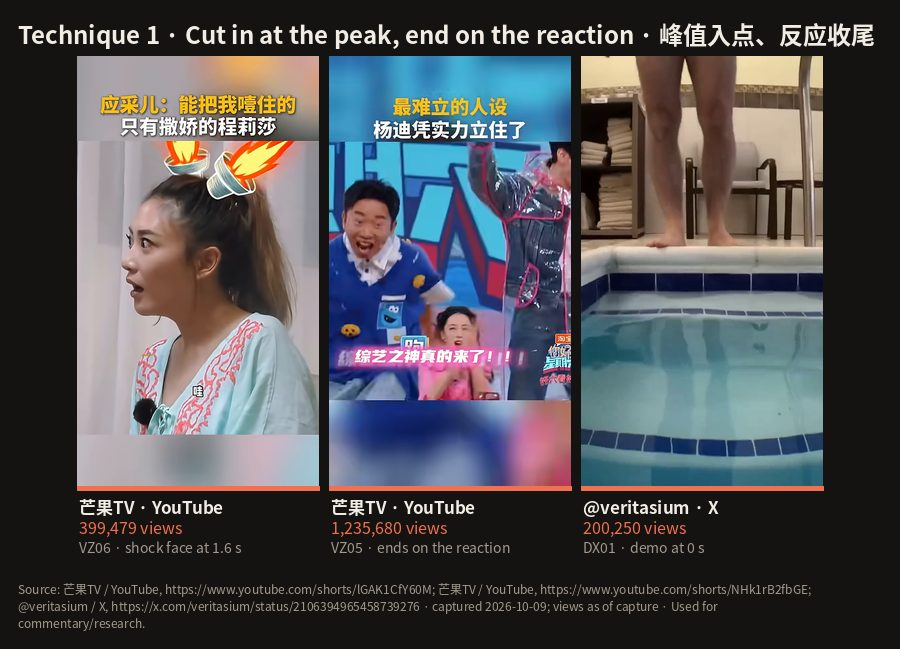
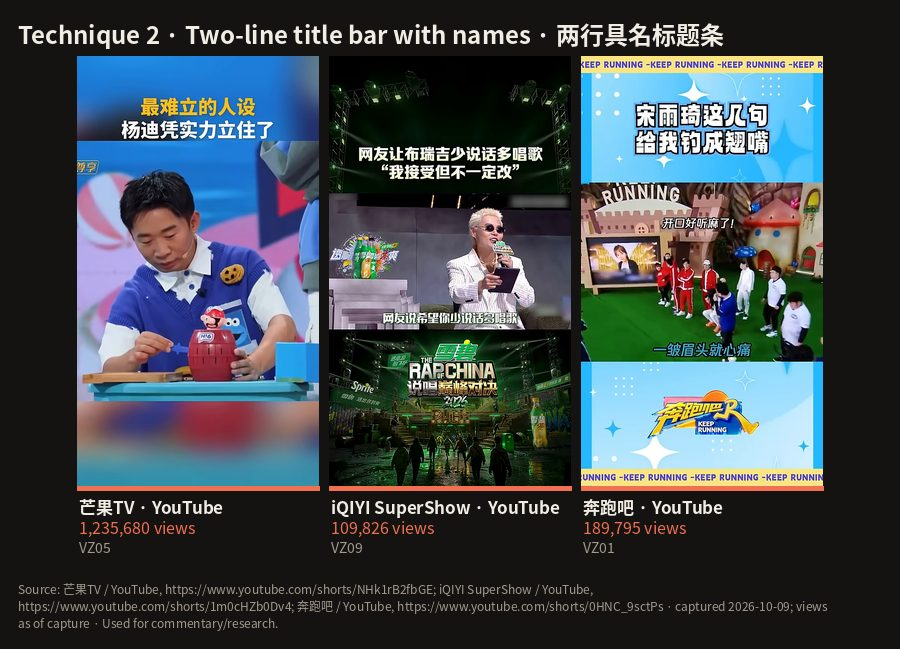
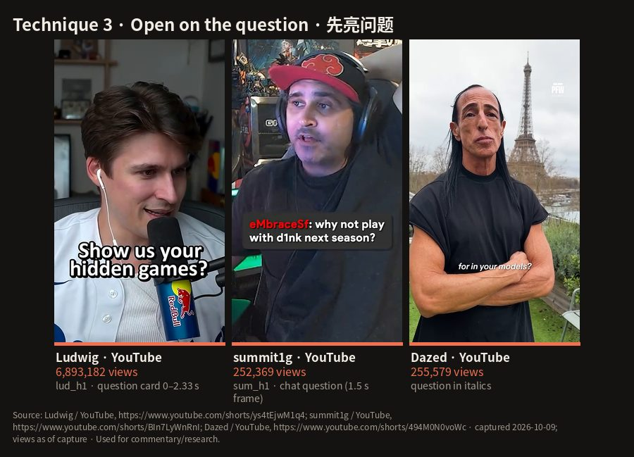
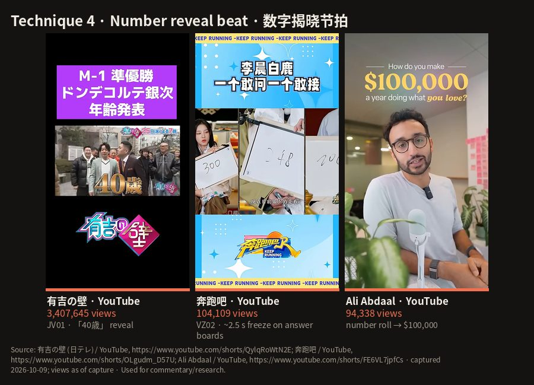
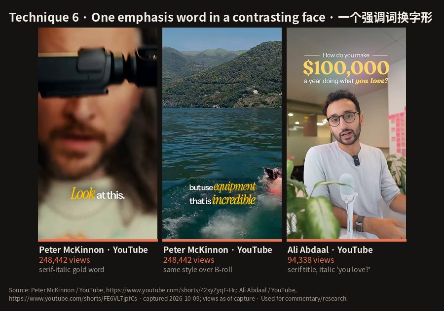
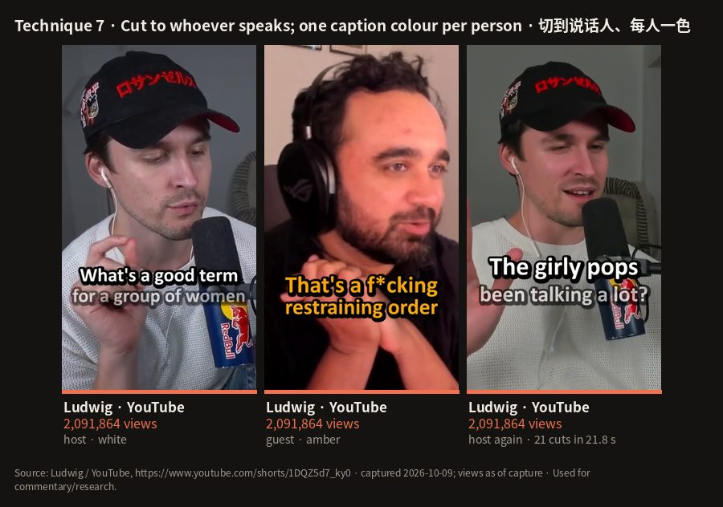
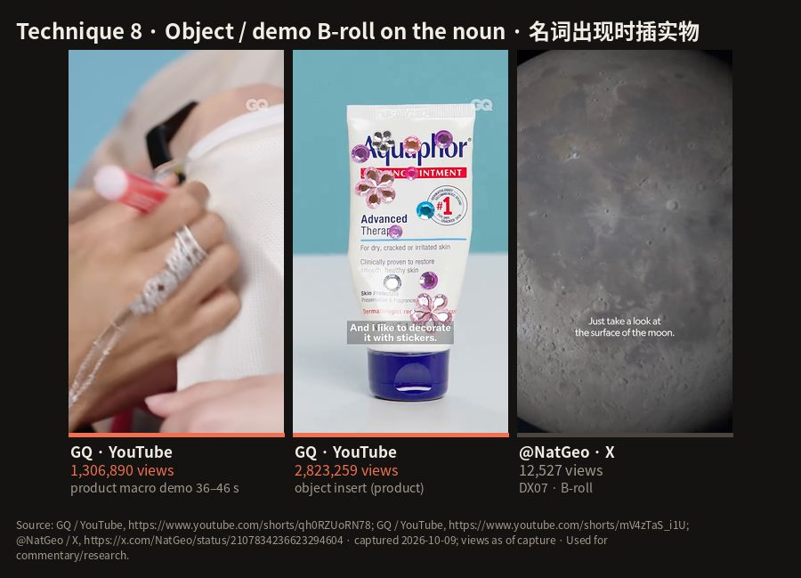
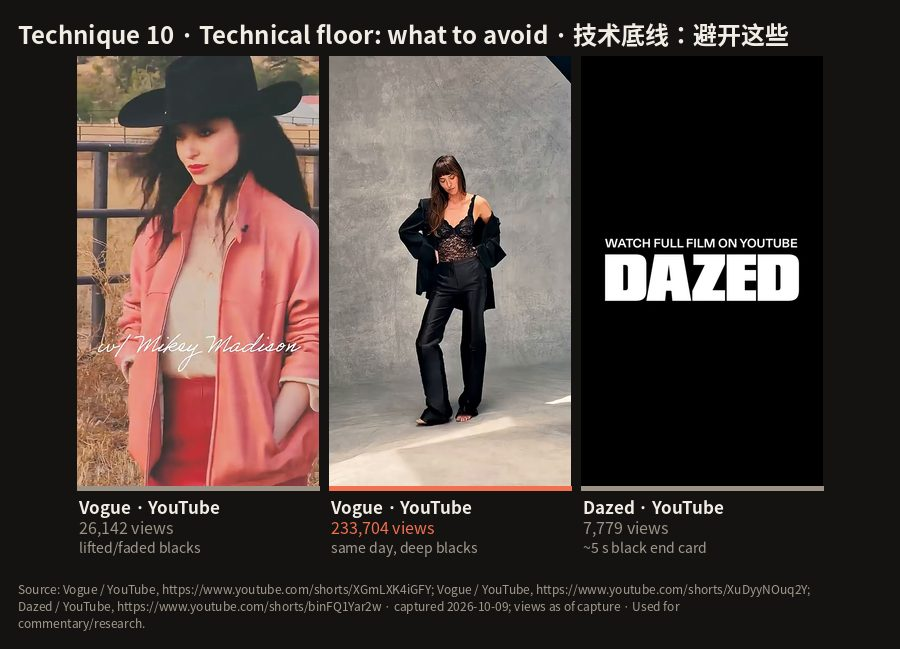
不要照抄
- 靠争议出圈。 Vox 一条 113,451 播放，却只有 48 个赞，对应 275 条回复、144 次引用。量是从反对声里来的，对个人号是品牌风险。
- 揣测式钩子：比如猜测讲者精神状态的文案，原话里没有。
- 假紧迫感：「JUST IN / 刚刚 / BREAKING」、倒计时、录播访谈上挂「LIVE」角标。
- 编造评论、弹幕或提问，或者照搬别的平台带真实用户名的评论截图。
- 第三方素材和品牌资产：电视台台标、节目角标、新闻照片、档案影像、别家的字体和角标。只学结构，不学识别物。
- 母带响度走极端：−7 到 −10 LUFS 的炸耳母带，或 −29 到 −33 LUFS 的过小音量。
- 死空气收尾：5 秒黑底品牌尾卡。
- 把抬黑（约 50/255）褪色调当默认调色。
- 特效过量：一条超过 2 次急推或闪白；每句都上花字；卡通火焰；在讲话类内容上用 120+ 切/分钟的 VHS 颗粒蒙太奇。
- 先藏脸、到揭晓才露脸。 访谈里，脸就是内容。
- 16:9 画面悬在空黑边里。（上下条承载标题和品牌的"三明治"版式可以用。）
- 过长的切片（>135s），除非素材是连续争论或连续大笑。
- 疑似投放的数据（点赞率异常低、带赞助横幅），不能当作任何结论的证据。
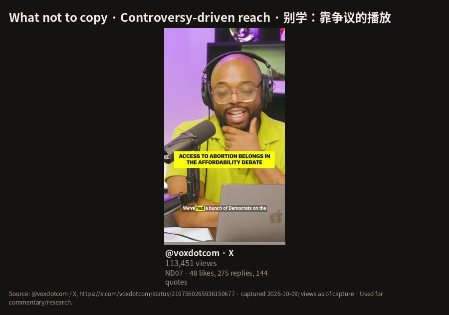
6. 四轮自制模板，我们学到的包装经验
2026-10-09 这一天，我们拿同一期公开访谈（Dwarkesh Podcast 对黄仁勋的访谈，2026-04-15 发布）里的三段，迭代了四轮模板。每轮一条经验。R0：最大的画面提升来自片源，不是设计。改为回源拿 1080p 原片并按人脸跟踪裁切后，人脸宽度从画面的 16% 提到 25%，清晰度提高到 3.3 倍，"小窗感"没了。R1：卡片和字幕围绕人脸摆放；加了常驻的"谁 + 论断"话题条、循环结尾和一段真正切出去的 B-roll，首秒也不再压暗。R2："任何叠层都不能碰到脸"成了硬规则；同时我们发现，保护人脸不能以牺牲推近节奏为代价，口播片靠这个节奏才不显得呆。R3：每个钩子和每句字幕都必须和讲者原话一样重，不能更重；另外新增两套设计向外观，各自有固定的排版系统（2 个字体角色、1 个强调色、固定网格）："Editorial" 和 "Cinema"。四轮下来，结论和上面的发现一致：撑起一条切片的是瞬间和原话；包装最好是一条可靠的底线，加一套统一的外观。每一轮的完整缩略图总览见附录（只放静帧）。
7. 准备在我们自己的切片号上验证的假设
下面的假设都还没有验证。方法：每个假设至少 8 组匹配片段，同一期素材、同一时段，相隔 ≤48h 交替先后发；一次只改一个变量。看帖龄 48h 的播放、3 秒留存 / 平均观看时长、点赞率和收藏率。
| ID | 假设 | A | B | 主指标 | 优先级 |
|---|---|---|---|---|---|
| H11 | 具体标题胜过口号标题 | 口号 | 人名 + 具体行为 / 数字 | 播放、点击 | 1 |
| H14 | 金句先放 | 按时间顺序 | 金句 1.5s 冷开 → 上下文 | 平均观看时长 | 1 |
| H13 | 杂志外观不掉播放，同时提高收藏 | 创作者外观（粗描边、黄色强调） | Editorial 外观 | 收藏率、点赞率（播放不显著下降即胜） | 2 |
| H17 | 播客切片补齐技术底线后表现提升 | 多机位 + 白色小字幕 | 补齐底线（响度、底噪、标题、强调词） | 播放、3 秒留存 | 3 |
| H12 | 问题卡开头胜过普通字幕开头 | 普通开头 | 主持人原问题（斜体）0–2.3s | 3 秒留存 | 4 |
| H10 | J-cut 视觉冷开胜过直接口播开头 | 0 秒进人脸 | 0–1.2s B-roll 压原声 → 切回脸 | 3 秒留存 | 之后 |
| H15 | 单镜头少剪辑的 editorial 版不输给阶梯推近版 | 阶梯推近 | 0–2 次推近 + 斜体问答 | 平均观看时长 | 之后 |
| H16 | 数字滚动胜过静态数字 | 静态 | 滚动 | 数字出现后 3 秒的留存 | 之后 |
| H18 | 时长：同一段剪成 ≤45s 和 60–90s | 长版 | 短版 | 完播率、播放 | 之后 |
已经准备好的成片对照（静帧见图 7）：卡片密度 每 8s 一张 对 每 15–18s 一张；结尾停在人脸上（定格 + 慢推 + 纸色字卡）对 0.5s 叠化回首帧的循环结尾；金句重放一次 对 不重放；新的 Editorial / Cinema 外观 对 R2 模板（同一片段、同一钩子）。
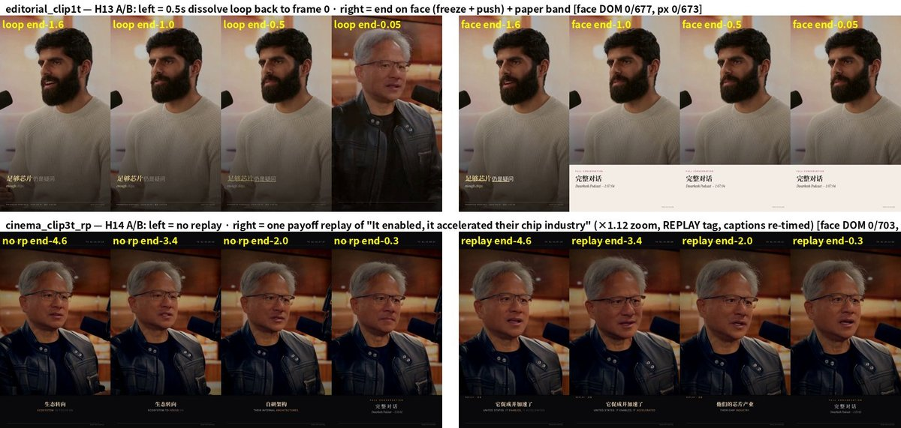
不管结果如何，我们都会公开。
8. 局限
- 样本偏英文。 访谈、新闻、纪录片这几批主要是 X 上的英文账号。中文侧只有 YouTube 上的综艺官方号、少数 X 账号（歸藏、投机实验室、宝玉、Sixth Tone），而中文设计向媒体在 X 上基本不发视频。
- 抖音、微博、小红书没有取样。 抖音只返回反爬 JS 挑战页，微博返回 403/302；B 站 UP 主页和视频接口返回 412 或风控错误（只有 popular 接口能读到元数据）。我们都没有绕过。影视解说没有拿到可用样本。
- 大号与话题混淆。 同号对照去掉了账号权重，但去不掉嘉宾知名度、话题、发布时机和帖龄。多数账号只有 2–4 条，没有做账号级中位数。拿同号的两个极端相比，会高估一般差距。
- 快照。 所有指标都抓取于 2026-10-09 约 03:30–07:47（UTC+8），之后已经变了。对照组之间帖龄不同，有几组明确带帖龄混淆（已标为弱）。
- 测量局限。 BGM 是从停顿推断的，音效没有实听；推近是抽查核实，不是全片统计；不少分析基于 480p 下载；J-cut / L-cut、速度坡、匹配剪辑都没有核实到；颜色值是近似值。
- 我们自己的失误。 游戏批次里一张 ID 对照表被覆盖，7 条早期下载无法回溯到原帖，已作废，没有用在任何结论里。
- 还没有我们自己账号的数据。 关于我们模板的每条建议，在第 7 节跑完之前都只是假设。
- 我们写的是自己做的工具。 读这些结论时请记住这一点。数据文件都列在
sources.md里，方便核对。
9. 开放问题
- 1. 包装看起来更多影响"号看起来像什么"，而不是"片子传多远"。它能不能可测地提高收藏和关注？这两个对账号的长期价值更重要。
- 2. 能不能从字幕里足够准确地识别出能独立成立的一句话，用来自动选入点？误判的代价有多大？
- 3. "低播放 + 高点赞率"能不能当作"没出粉丝圈"的可靠早期信号？
- 4. "越短越好"里的"连续争论或连续大笑"例外，边界在哪里？
- 5. 抖音、B 站、小红书是不是同样的规律？我们现在的样本回答不了。
附录：完整缩略图总览（我们自己的成片）
R0 对 R1 · R1 对 R2 · R2 对 R3。较早轮次里的部分字幕是草稿，后续轮次做了修改。


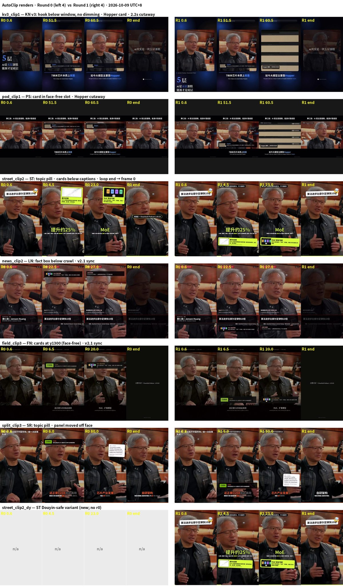
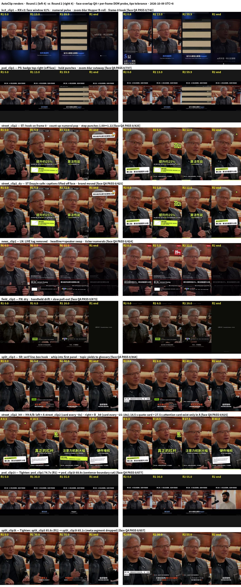
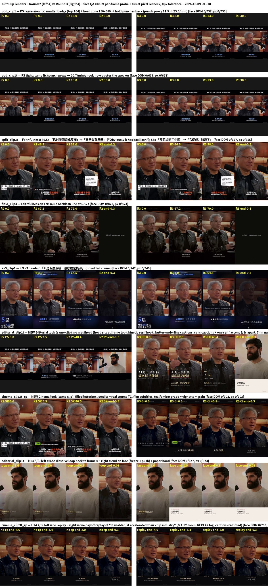
图片来源 / 参考
图 C1–C23 含第三方公开帖子的静帧，已缩小尺寸，仅用于评论与研究，并注明出处；版权归原作者所有。所有静帧均于 2026-10-09（UTC+8）从当天为本分析下载的素材中截取，没有另行下载新素材。指标为 2026-10-09 抓取时的快照。X 指标里标 "imp" 的是曝光，其余为播放。YouTube 链接由视频 ID 拼出（见 sources.md）。
数据、逐条指标、URL 和抓取时间见 sources.md。图表由 src/charts.py 根据这些数字生成；案例图 C1–C23 由 src/frames.py 生成。缩略图总览（图 7 和附录）来自我们对一段公开访谈的自制成片。第三方静帧仅用于评论与研究，并已注明出处，见「图片来源 / 参考」。我们的成片不提供视频链接。